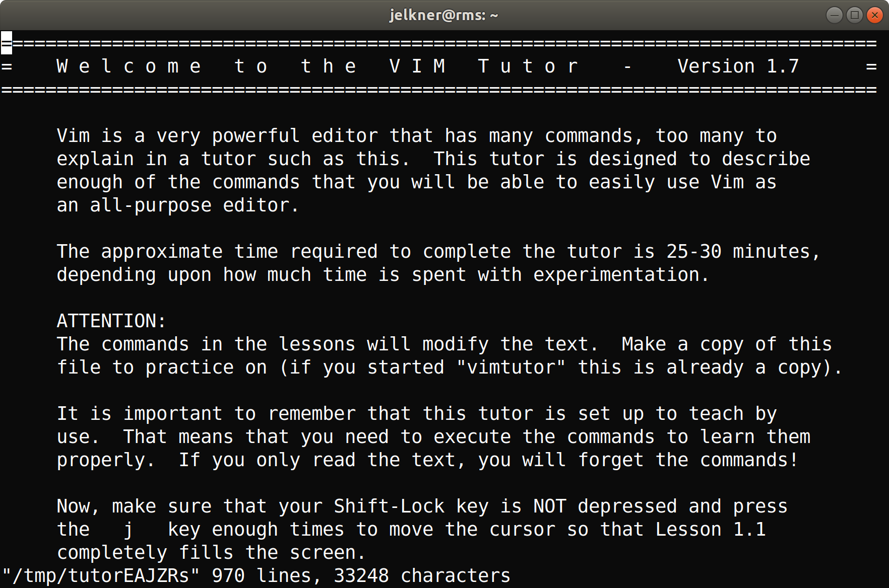

Like GNU nano, Vim is a text editor. It is has many more features than nano and is thus much more powerful, but it is also more challenging to learn.
VIM operates with three different modes:
<Esc> (escape) key.i, I, a, A,
o, and O will each move from command mode to
insert, each in a different place in the file relative to the cursor.set to change vim's
appearance. Last line mode is only accessible from command mode, by typing
the : (colon) character.
One of the easiest ways to begin learning to use vim is with the built-in
VIM Tutor. This little program copies a large text file to the
/tmp directory and opens it in vim. It contains lessons for
learning vim which you can edit as you read through the tutorial. You can quit
without saving, and get a clean copy of the lesson file the next time you
restart the tutorial.
$ vim another_word.txtThis will create the text file,
another_word.txt, in a vim edit
session. When vim first launches it is in command mode. To put it into
insert mode, type the character i. The type the
following word:
peaceSave the file and exit vim, you first have to get back into command mode. Press the
Esc (escape) key to get back into command mode. Then
type a colon (:), and the letters w and
q. This will write to the file and quit vim. Run the
ls command and confirm that you see
another_word.txt among the listing.$ vimtutor
A file will open that looks like this:

Complete the first 4 lessons from the tutorial.